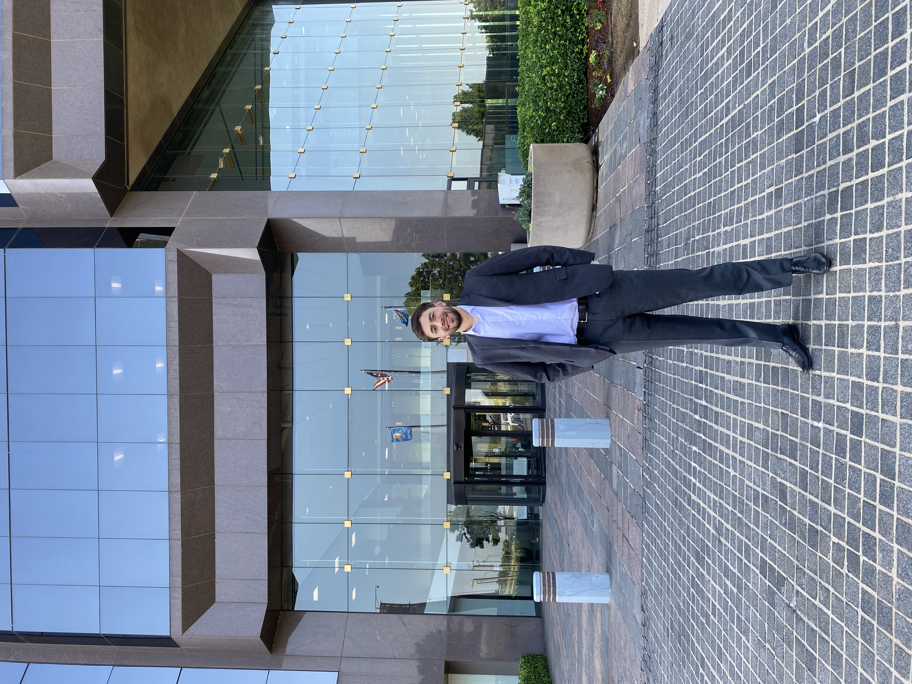
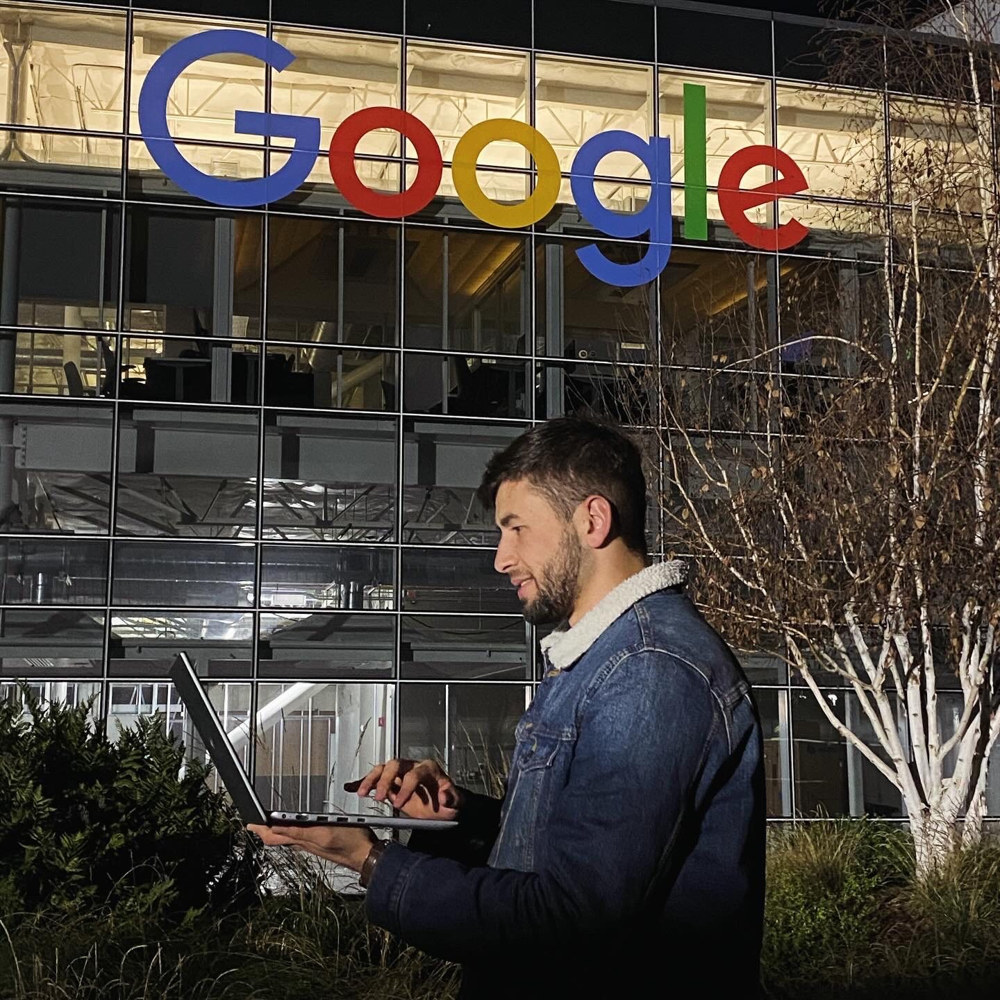
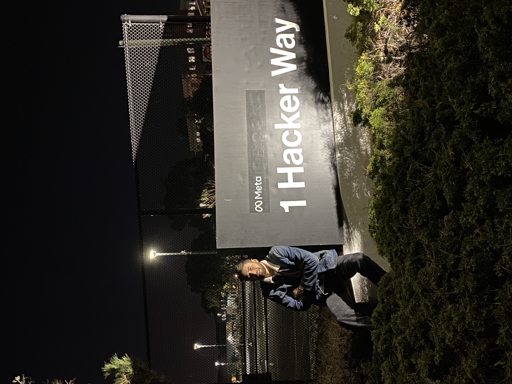

Welcome to My Portfolio!





I’m Shohruz Junaidov, a dedicated student specializing in Management Information Systems and Management Information Technology. Here, you’ll find a showcase of my academic journey, technical skills, and professional experiences.
Whether you are a collaborator, recruiter, or simply curious, feel free to explore and connect as I work toward creating innovative solutions at the intersection of business and technology.